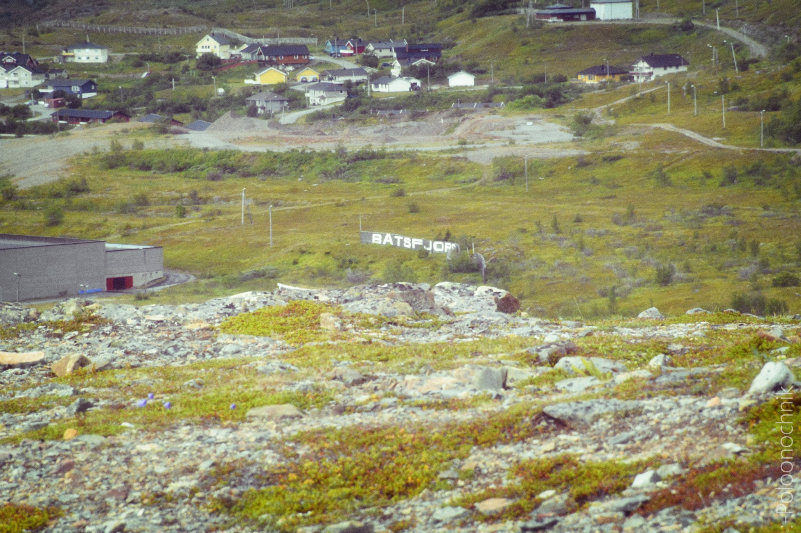
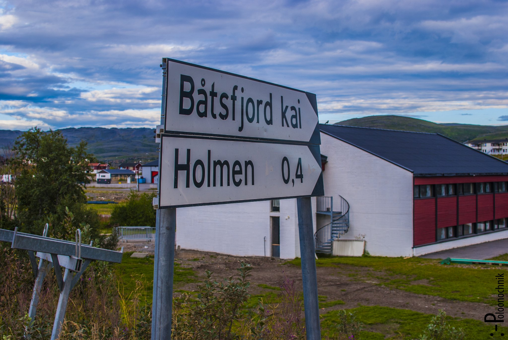

Stedet
Båtsfjord er en arbeidsby i Finnmark, på 70°38′N, der Barentshavet møter veiens ende: rundt 2 100 mennesker, én isfri havn og et levende fiske.
Dette er en rolig portalside for Båtsfjord-provinsen i Cyber Empire. Den er ikke et kommunalt nettsted, og den later ikke som den er en turistside for kommunen.

Pass
- Status
- Hallen er live · portalen er utkast
- Eier
- Board
- Neste dato
- Etter Ballys pass og Carls go
- Kilde
- Carl-Walker-pm/Carl-Walker-pm.github.io · mappen k/batsfjord/
Tre dører
01
Hovedhallen
Det levende magasinet, på engelsk: The Fishing Capital. Hallen er allerede live.
Til hovedhallen 02Havna i arbeid
Ett dypdykk i hallen: kaia som arbeidsplass, ikke som bakgrunn. Båter, kaianlegg og et fiske som fortsatt er arbeid.
Til dypdykket 03Tilbake til katalogen
Veien tilbake til kapitalkatalogen for Cyber Empire.
Til katalogen
To adresser
En provins finnes to ganger: som en side som laster, og som en kildemappe i arkivet. Begge deler er navngitt her.
Kildemappe
Carl-Walker-pm/Carl-Walker-pm.github.io · k/batsfjord/
Veien i Cyber Empire
Denne portalen er en provins i Cyber Empire. Veien opp går til Cyber Empire, og tilbake til kapitalkatalogen.
Cyber Empire
https://carl-walker-pm.github.io/k/cyber-empire/Kapitalkatalog
https://carl-walker-pm.github.io/k/projects/Ordrøtter
Hvert navn er delt i delene det er bygd av. Trykk på ved en del for å se roten: bokmål → norrønt → urgermansk → urindoeuropeisk, med kilde.
- Båtsfjord
- Hovedhallen
- Havna
- Fiskerihovedstaden
- Syltefjordstauran
- Hamningberg
- Báhcavuonna
rot med kilde · usikker, flere syn · grammatisk endelse · ingen kilde funnet, ingen etymologi vist
Utkast. Etymologiene er hentet fra Bokmålsordboka (ordbokene.no), Wiktionary, Store norske leksikon og Wikidata, kontrollert 13. november 2026. Ingen fagperson har lest dem ennå.
Lyd: ekte opptak fra Lingua Libre (Wikimedia Commons) der det finnes. Ellers brukes en syntetisk norsk stemme (Piper «talesyntese», CC0), og den er merket «syntetisk stemme». Det samiske navnet har ingen lyd, fordi det ikke finnes noe ekte opptak. IPA er hentet fra Wiktionary; former for norrønt og urgermansk er rekonstruert.
Kreditering og merking
Foto: Poloonochnik. Begge bildene på denne siden er tatt i Båtsfjord: skiltet i lia, og skiltet til Båtsfjord kai og Holmen. I den levende hallen er bare fem fotografier verifisert tatt i tettstedet selv; de øvrige viser Finnmark og Norge mer allment, og er merket som det.
Fiksjon: Virksomhetene i hovedhallen er konsepter, merket CONCEPT i magasinet. De er ikke eksisterende bedrifter. Ingen bestilling er åpen her.
Denne siden er et utkast og et konsept. Den er ikke offentlig før Ballys pass og Carls go. Uavhengig prosjekt – ikke Båtsfjord kommune.